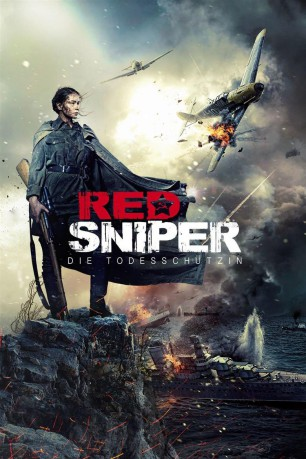
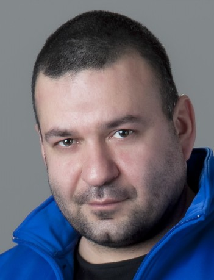

#4725 Red Sniper - Die Todesschützin
Alternativ: Battle for Sevastopol (Englischer Titel)
 
 IMDB-Wertung: 7.2 / 10
IMDB-Wertung: 7.2 / 10  Metascore: 0
Metascore: 0 
Kiew 1941. Ljudmila Pawlitschenko ist noch Studentin, als die deutsche Wehrmacht unter dem Decknamen „Unternehmen Barbarossa“ die Sowjetunion angreift. Bald schon steht die junge Frau mit der Waffe in der Hand an vorderster Front. Verehrt und gefürchtet als „Lady Death“ steigt sie zur erfolgreichsten und kaltblütigsten Scharfschützin des Zweiten Weltkriegs auf: 309 Soldaten sterben durch ihre Kugeln. Ihr Mut und ihre Zielgenauigkeit machen Ljudmila über die Grenzen ihres Landes hinaus zu einer Legende und ihre herausragende Tapferkeit führt sie bis auf die politische Bühne des Weißen Hauses. Doch die Unmenschlichkeit des Krieges fordert auch bittere Opfer von Ljudmila und ihre Berühmtheit bringt sie in tödliche Gefahr...
Jahr: 2015
Dauer: 122 Minuten
FSK:
Land: Ukraine Studio: MeteorTonspuren:
Untertitel: Deutsch,
Auflösung: 1080p (1920x800) Größe: 6082 MB
Genre: Biographie, Drama, Liebe, Krieg
Regisseur: Sergey Mokritskiy
Drehbuch: Brian Garfield
Soundtrack:
Darsteller:
- Yuliya Peresild als Lyudmila Pavlichenko
- Evgeniy Tsyganov als Leonid Kitsenko
- Joan Blackham als Eleanora Ruzvelt
- Oleg Vasilkov als Makarov
- Nikita Tarasov als Chopak
- Inga Nagornaya als Vera
- Anatoliy Kot als Nikolay
- Stanislav Boklan als otets Lyudmily
- Natella Abeleva-Taganova als Sonechka
- Sergey Anashkin als Nemetskiy soldat
-  Vilen Babichev als Fima
- Nikolay Boklan als
- Sergey Bondarenko als Soldat
- Zaza Chanturiya als
- Gennadiy Chentsov als Komissar
- Aleksandr Denisenko als Vadim
- Oleg Drach als
- Andrew Franchuk als Maykl
- Aleksandr Gereles als Zavkhoz v universitete
- Viktor Grigorev als
- Sergey Kalyuka als Matros
- Valentin Kasyan als Amerikanskiy zhurnalist
- Aleksandr Kovbasyuk als Artillerist
- Vladislav Kremok als kursant KMB
- Dmitriy Lalenkov als
- Vladimir Lilitskiy als
- Vitaliy Linetskiy als mayor KMB
- Artyom Melnichuk als Arseniy
- Vyacheslav Nikolenko als Budi Gatri
- Svetlana Osadchenko als Devochka-chtets
- Polina Pakhomova als Masha
- Darya Plakhtiy als kursantka KMB
- Aleksandr Polovets als Unter-ofitser
- Ilya Prokopiv als Kolesov
- Gala Reut als tetya Sima
- Anton Sebastian als Amerikanskiy zhurnalist
- Alla Sergiyko als mat Lyudmily
- Vladimir Skorik als Feldman
- Nikita Tezin als Pchelintsev
Datei: X:\2015(N-Z)\Red Sniper - Die Todesschützin (2015, FSK, 1920x800).mkv seit 09.11.2016
Festplatte: HD 2015(A-Z)
 Es gibt insgesamt 161 Filme in der Gruppe '2015(N-Z)'
Es gibt insgesamt 161 Filme in der Gruppe '2015(N-Z)'